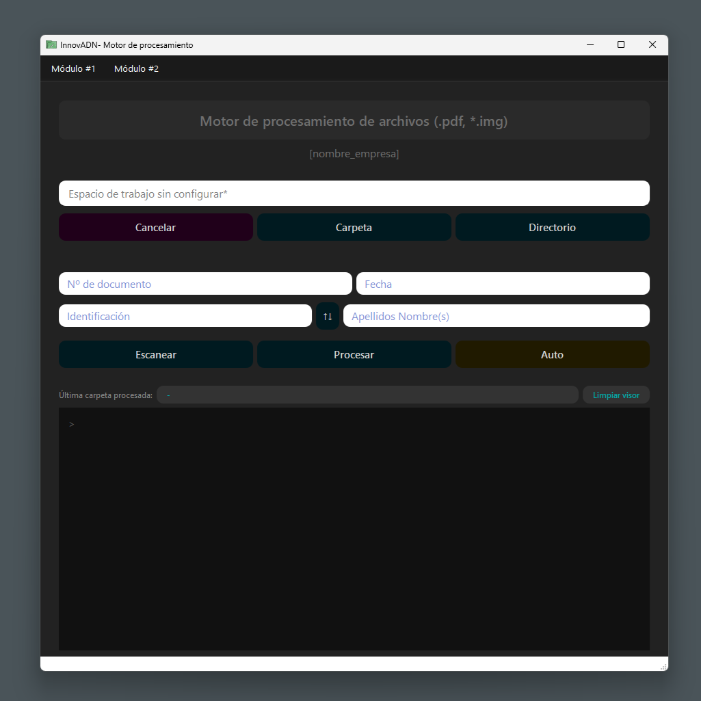
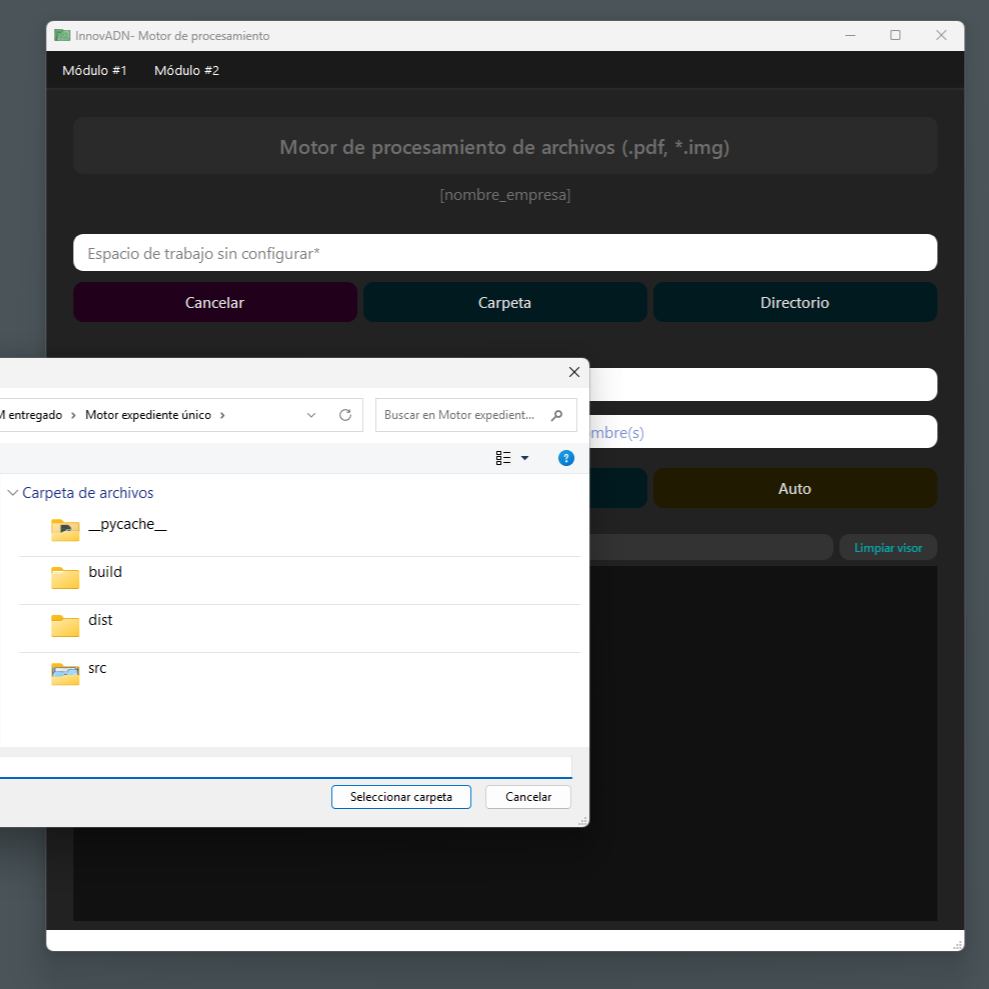
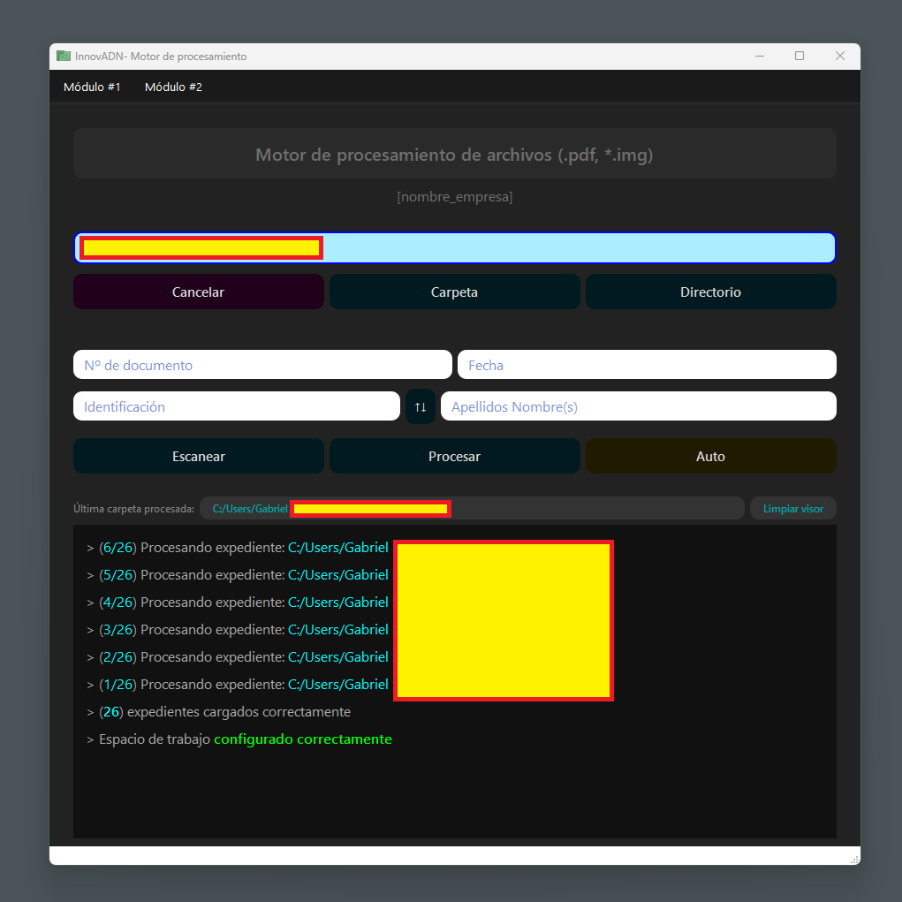
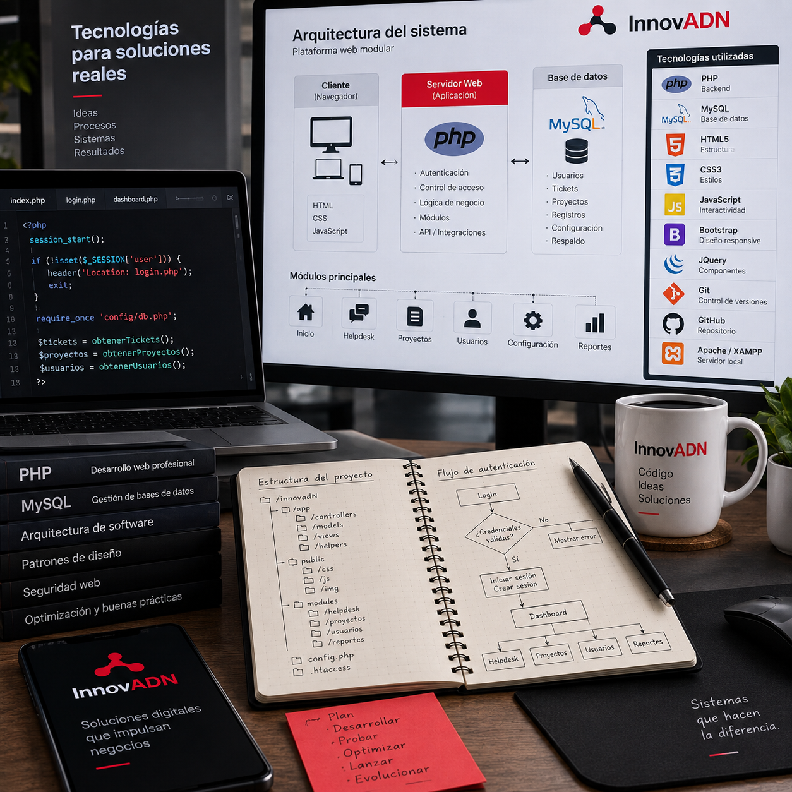
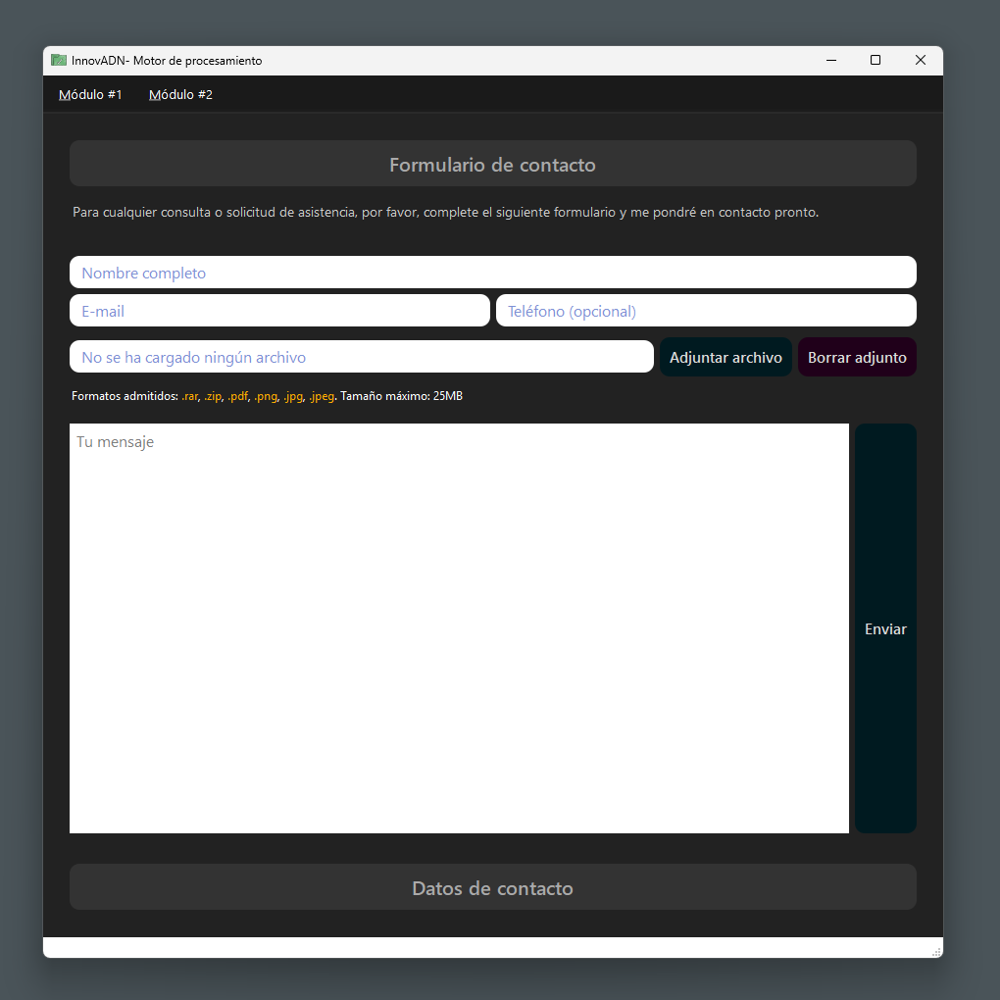
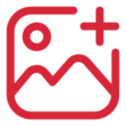

Software a la medida
Creamos soluciones pensadas específicamente para la forma en que trabaja tu negocio, no al revés.
— Aliado de tu negocio
Combinamos estrategia, diseño y tecnología para desarrollar software que resuelve problemas reales y acompaña el crecimiento de tu negocio, de principio a fin.
— Servicios —
Creamos soluciones pensadas específicamente para la forma en que trabaja tu negocio, no al revés.
Sitios y plataformas modernas, rápidas y escalables: desde páginas informativas hasta sistemas completos.
Sistemas de escritorio eficientes y confiables para gestionar operaciones internas del negocio.
Conectamos tus herramientas entre sí para centralizar tu información y eliminar fricción operativa.
Automatizamos tareas repetitivas para que ganes tiempo y reduzcas errores manuales.
— Proyectos —
Espacio reservado para mostrar trabajos reales. Reemplaza cada tarjeta por un caso de proyecto concreto cuando esté disponible.
[Categoría]
[Descripción breve del proyecto, el problema que resolvió y el resultado obtenido para el cliente.]
Ver caso de estudio →[Categoría]
[Descripción breve del proyecto, el problema que resolvió y el resultado obtenido para el cliente.]
Ver caso de estudio →[Categoría]
[Descripción breve del proyecto, el problema que resolvió y el resultado obtenido para el cliente.]
Ver caso de estudio →¿Tienes una idea o proyecto en mente? Hablemos y encontremos la mejor solución.
— Sobre mí
Dirijo cada proyecto de principio a fin: entiendo el desafío, diseño la solución y coordino lo necesario para llegar al mejor resultado posible.
“La atención es la forma más rara y pura de generosidad.”
— Simone Weil
Un equipo que se adapta al proyecto
Las capacidades que tu proyecto necesita, en el momento en que las necesita.
Recursos a la medida, presupuesto inteligente. Asigno solo lo necesario para tu proyecto: cada recurso tiene un propósito.
— Preguntas frecuentes
Resolvemos las dudas más comunes para que tengas toda la información antes de dar el siguiente paso.
Desarrollo software a medida: aplicaciones web, aplicaciones de escritorio, automatización de procesos e integraciones de sistemas. Me adapto a las necesidades específicas de cada negocio.
Depende del alcance, la complejidad y las funcionalidades. Siempre busco ofrecer precios justos y acordes al valor entregado. Podemos conversar tu idea sin compromiso para darte una estimación.
Sí. Desarrollo sitios modernos, rápidos y escalables, desde páginas informativas como esta hasta sistemas web completos.
Varía según el proyecto. Algunos pueden estar listos en días o semanas, mientras que otros más complejos pueden tomar varios meses. Te doy un estimado claro desde el inicio.
Sí. Trabajo con emprendimientos, profesionales independientes y empresas de distintos tamaños, adaptando el alcance para que el proyecto sea viable para ambas partes.
Sí. Ofrezco soporte y mantenimiento según el tipo de proyecto. Definimos juntos el alcance y el tiempo de soporte que necesitas.
Trabajo principalmente con Python, PHP y JavaScript, y también tengo experiencia con Java, C++ y Kotlin, eligiendo la herramienta más adecuada según los requerimientos de cada proyecto.
Sí. Todos los proyectos se formalizan mediante una proforma y un contrato que establecen claramente el alcance, condiciones, tiempos y costos. Incluso en proyectos pequeños, mantengo este proceso claro y completo.
— ¿Listo para tu proyecto?
Cuéntame tu idea, conversemos sobre tus necesidades y encontremos la mejor solución. No necesitas tener todos los detalles: podemos empezar desde una idea.
Horario de atención: lunes a viernes, 9:00–18:00 (hora de Costa Rica). Disponible para proyectos locales y remotos.
— Caso de estudio
Herramienta para organizar archivos: separa documentos PDF, renombra automáticamente, convierte imágenes a PDF, crea carpetas y subcarpetas, reubica archivos y realiza lectura inteligente de documentos con extracción de texto.





— Caso de estudio
Herramienta para organizar archivos: separa documentos PDF, renombra automáticamente, convierte imágenes a PDF, crea carpetas y subcarpetas, reubica archivos y realiza lectura inteligente de documentos con extracción de texto.

— Caso de estudio
Herramienta para organizar archivos: separa documentos PDF, renombra automáticamente, convierte imágenes a PDF, crea carpetas y subcarpetas, reubica archivos y realiza lectura inteligente de documentos con extracción de texto.